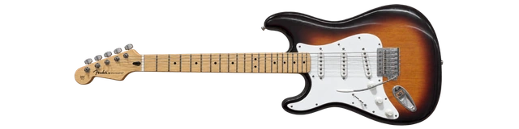

Open-string pitches, low to high
One pitch per string, lowest to highest. The number is the octave (for example, E2).
·
Family and catalog PDFs use the current root note.
Enable JavaScript to explore the fretboard and create customized PDFs.